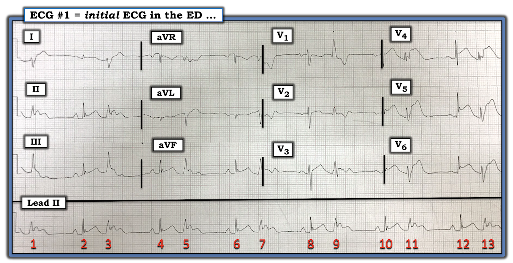
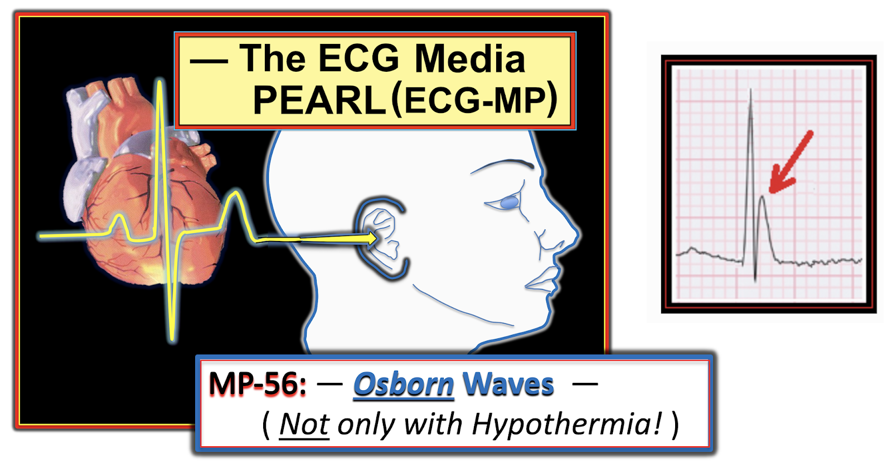
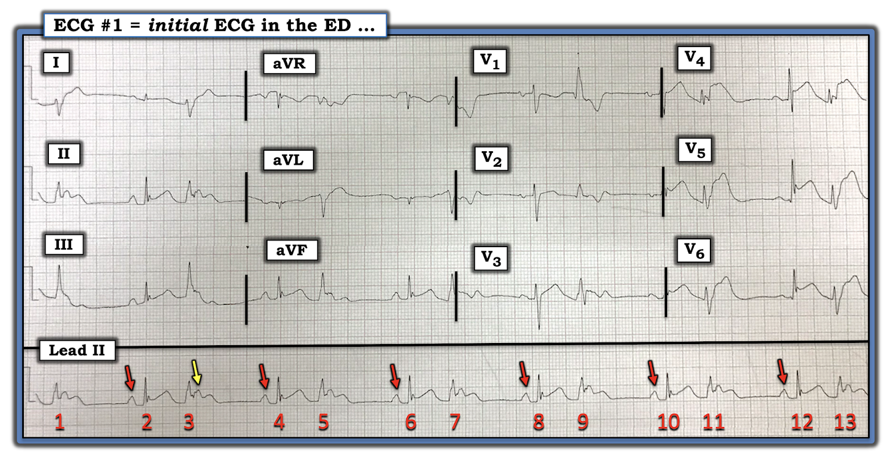
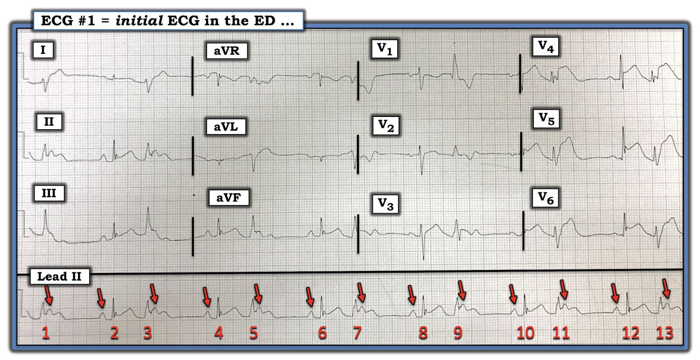
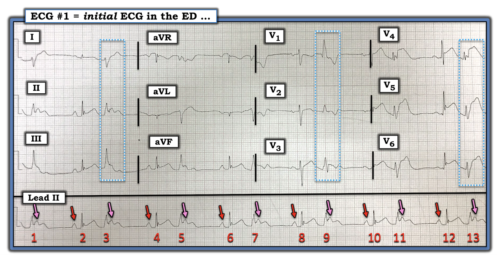
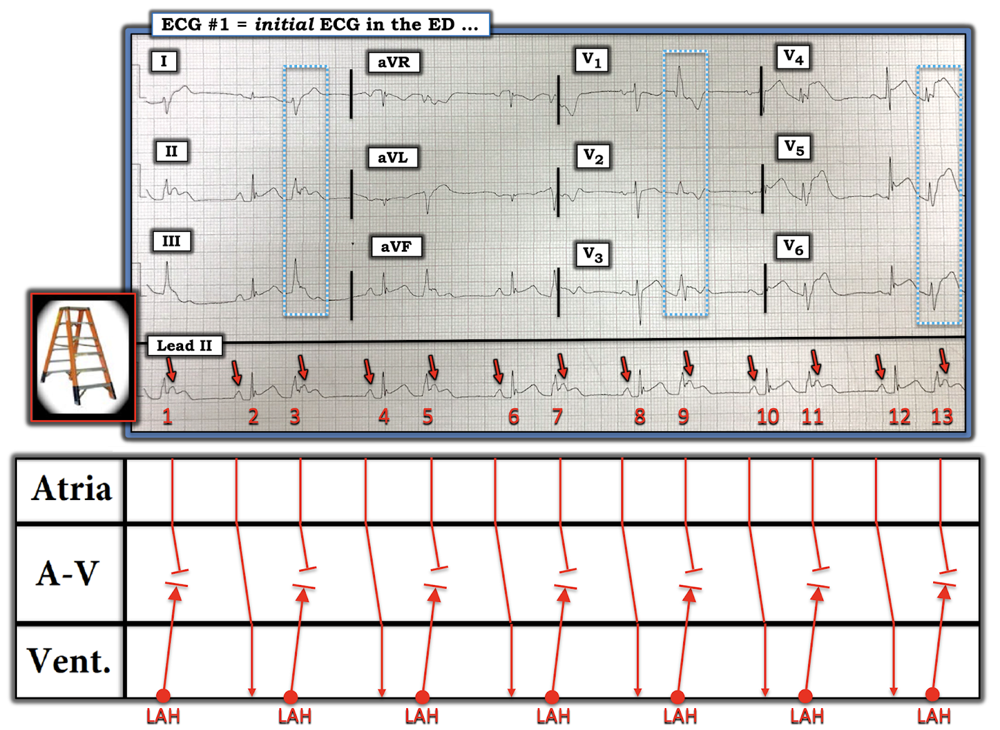
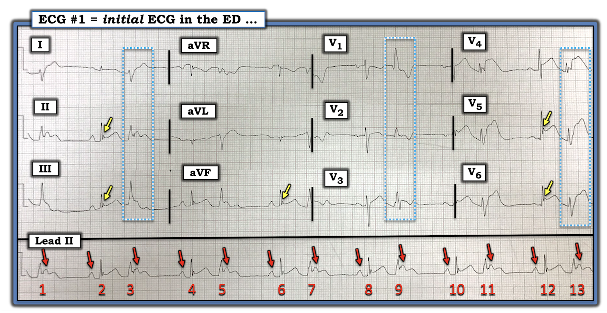

ECG Blog #241 (56) — Nhịp đôi thú vị
Điện tâm đồ 12 chuyển đạo và dải nhịp chuyển đạo II dài trong Hình-1 được ghi từ một người đàn ông ở độ tuổi 60 có diễn tiến phức tạp, gồm sốt cao và đau ngực. Bệnh nhân không đáp ứng và mất mạch khi đến ED (Khoa Cấp cứu – Emergency Department) — nhưng đã đáp ứng nhanh với hồi sức (dù có tụt huyết áp) — và vào lúc đó điện tâm đồ #1 được ghi.
- Đáng tiếc — tôi không có thông tin chi tiết về diễn tiến sau đó của bệnh nhân này. Dù vậy — tôi thấy điện tâm đồ trong Hình-1 đủ hấp dẫn và đủ giá trị giảng dạy để trình bày ca này mà không cần thêm phần theo dõi lâm sàng.
CÂU HỎI:
- Nhịp là gì trong Hình-1?
- Còn điều gì KHÁC đang diễn ra trên bản ghi này?
- Có sóng Osborn không? Nếu có — Điều này có thể mang ý nghĩa gì?


=======================================
LƯU Ý: Một số bạn đọc có thể muốn nghe ECG Audio PEARL dài 5:35 phút trước khi đọc Suy nghĩ của tôi về điện tâm đồ trong Hình-1. Bạn có thể xem Suy nghĩ của tôi về bản ghi này bất cứ lúc nào (nằm bên dưới ECG MP-56).
=======================================


ECG Media PEARL #56 (5:35 phút Audio) hôm nay — Sóng Osborn là gì? (GỢI Ý: Sóng Osborn không chỉ gặp trong hạ thân nhiệt! )
Cách tiếp cận BAN ĐẦU của tôi với điện tâm đồ trong Hình-1:
Đây là một điện tâm đồ đặc biệt khó — vì hình dạng QRS liên tục thay đổi trên bản ghi 12 chuyển đạo. THÚ NHẬN: Tôi hoàn toàn thừa nhận rằng lúc đầu tôi đã bối rối không biết chuyện gì đang diễn ra.
- ĐIỂM THEN CHỐT (PEARL) #1: Khi còn nghi ngờ về nguyên nhân của một nhịp tim — Hãy có hệ thống! Bắt đầu với dải nhịp chuyển đạo dài bằng cách xét 5 thông số MẤU CHỐT trong cách tiếp cận Ps, Qs & 3Rs (Xem ECG Blog # 185).
- Vì hình dạng QRS gây bối rối, liên tục thay đổi trên điện tâm đồ 12 chuyển đạo — lúc đầu tôi bỏ qua bản 12 chuyển đạo — với hy vọng rằng hiểu được nhịp sẽ giúp tôi gỡ rối những gì đang diễn ra trên bản 12 chuyển đạo.
Quá trình suy nghĩ theo từng bước của tôi khi đánh giá nhịp trong Hình-1 được trình bày dưới đây. Trong phần tường thuật — tôi đưa vào cả những câu hỏi mà tôi đã tự đặt ra cho mình.
- Có nhịp theo nhóm (group beating) (tức là các nhóm 2 nhát lặp lại theo kiểu "dài-ngắn"). Vì vậy, dù nhịp thất không đều (Regular) — vẫn có một kiểu "tổ chức" nào đó của nhịp.
- Sóng P (P waves) có hiện diện! Ít nhất một số sóng P này có dẫn truyền — được xác định nhờ có sóng P với khoảng PR hằng định (và bình thường) đứng trước mỗi phức bộ QRS xuất hiện ở cuối các khoảng R-R dài hơn (tức là các mũi tên ĐỎ phía trước các nhát #2,4,6,8,10 và 12 trong Hình-2). Điều này cho biết có một nhịp xoang nền.
- Phức bộ QRS hẹp ở mỗi nhát dẫn truyền từ xoang (tức là các nhát #2,4,6,8,10 và 12).


CÂU HỎI: Ngoài các sóng P được đánh dấu bằng mũi tên ĐỎ trong Hình-2 — Còn sóng P nào khác trên bản ghi này không?
- GỢI Ý: Mũi tên VÀNG trong Hình-2 gợi ý điều gì?
ĐIỂM THEN CHỐT (PEARL) #2: Tôi thấy chỉ một việc đơn giản là đánh dấu sóng P cũng giúp ích rất nhiều cho việc nhận diện nhịp.
- Lúc đầu tôi không chắc chỗ gồ lên ở đoạn ST của nhát #3 (mũi tên VÀNG) có phải là một sóng P xoang khác hay không. Nhưng chỗ gồ này có vẻ nằm khoảng giữa 2 mũi tên ĐỎ đầu tiên trong hình này — và hình dạng của chỗ gồ này trông giống hình dạng của các sóng P xoang dẫn truyền khác.
- Dùng compa đo (calipers) đã cho tôi câu trả lời chỉ trong vài giây! (Hình-3).


CÂU HỎI: Có phải tất cả các sóng P trong Hình-3 đều dẫn truyền?
- GỢI Ý: Các phức bộ QRS của nhát #3,5,7,9,11 và 13 có sóng P đứng trước không?
TRẢ LỜI: Các nhát #1,3,5,7,9,11 và 13 không có sóng P đứng trước. Thay vào đó — một sóng P xoang đúng lúc xuất hiện ngay sau QRS của các nhát này (các mũi tên HỒNG trong Hình-4).
- Việc các sóng P xoang đúng lúc được đánh dấu bằng mũi tên HỒNG không được theo sau bởi một phức bộ QRS cho biết các nhát #1,3,5,7,9,11 và 13 không thể là nhát được dẫn truyền. Thay vào đó — các nhát này hẳn phải xuất phát từ dưới nút AV! (tức là các nhát #1,3,5,7,9,11 và 13 không thể là PAC hay PJC — vì nếu đúng như vậy — chúng sẽ đặt lại sóng P xoang kế tiếp!).


ĐIỂM THEN CHỐT (PEARL) #3: Dùng các chuyển đạo ghi đồng thời sẽ gỡ rối được tình thế!
- Chúng ta vừa xác định rằng các nhát #1,3,5,7,9,11 và 13 hẳn phải xuất phát từ dưới nút AV. Kết luận này lúc đầu làm tôi ngạc nhiên — vì trên dải nhịp chuyển đạo II dài, các nhát này trông không rộng, và hình dạng của chúng trông giống các nhát dẫn truyền từ xoang đứng trước chúng.
- Để cho rõ — tôi đã khoanh trong các hình chữ nhật xanh-trắng ở Hình-4 hình ảnh của các nhát #3, 9 và 13 ở các chuyển đạo ghi đồng thời khác. 12 chuyển đạo thì tốt hơn một. Giờ đây hẳn đã rõ rằng hình dạng QRS của các nhát #1,3,5,7,9,11 và 13 rất khác với hình dạng QRS của các nhát dẫn truyền từ xoang #2,4,6,8,10 và 12.
CÂU HỎI: Nếu các nhát #1,3,5,7,9,11 và 13 không phải trên thất — thì chúng xuất phát từ ĐÂU?
- GỢI Ý: Nhìn vào bên trong các hình chữ nhật xanh-trắng ở Hình-4 — Các nhát này RỘNG bao nhiêu? — và hình dạng của chúng ở các chuyển đạo ghi đồng thời khác gợi ý (các) rối loạn dẫn truyền NÀO?
TRẢ LỜI: Nhìn vào các chuyển đạo ghi đồng thời trong Hình-4 — các nhát #1,3,5,7,9,11 và 13 rộng hơn một chút (nhưng không nhiều) so với các nhát dẫn truyền từ xoang đứng trước chúng. Điều này thấy rõ nhất ở nhát #9 tại chuyển đạo V1 — trong đó phức bộ qR ở chuyển đạo này có thời gian ~0,11 giây.
- Hình dạng QRS của các nhát #1,3,5,7,9,11 và 13 phù hợp với RBBB (dạng qR giãn rộng ở chuyển đạo V1 + sóng S cuối rộng ở các chuyển đạo bên I và V6) và LPHB (sóng S rất sâu và đi xuống nhanh ở chuyển đạo I + sóng R chiếm ưu thế ở chuyển đạo II và III).
- LƯU Ý: Để ôn lại cách xác định nhanh các blốc nhánh và blốc phân nhánh — Xem ECG Blog #204 (về các BBB) và ECG Blog #203 (về các blốc phân nhánh).
ĐIỂM THEN CHỐT (PEARL) #4: Chúng ta đã xác định rằng các nhát không dẫn truyền #1,3,5,7,9,11 và 13 hẳn phải xuất phát từ dưới nút AV. Nhưng việc các nhát này không quá rộng — và — hình dạng QRS của chúng phù hợp với một kiểu rối loạn dẫn truyền đã biết (tức là RBBB/LPHB) — gợi ý rằng các nhát nhịp đôi này xuất phát từ một vị trí nào đó bên trong hệ thống dẫn truyền.
- Nói đơn giản — hệ thống dẫn truyền có 3 nhánh. Đó là: i) nhánh phải (RBB); ii) phân nhánh trước trái (LAH) của nhánh trái; và, iii) phân nhánh sau trái (LPH) của nhánh trái.
- Cách DỄ để xác định nguồn gốc của một nhát thoát hay nhát lạc chỗ biểu hiện hình ảnh blốc phân nhánh — là phức bộ đó phát sinh từ phân nhánh còn lại. Do đó, trong Hình-4 — vì các nhát #1,3,5,7,9,11 và 13 biểu hiện hình dạng RBBB/LPHB — chúng hẳn phải là các nhát phân nhánh (fascicular) phát sinh từ phân nhánh trước trái!
- Tôi minh họa sơ đồ cơ chế của nhịp trong ca hôm nay bằng giản đồ bậc thang (laddergram) ở Hình-5.


Còn PHẦN CÒN LẠI của điện tâm đồ thì sao?
Hãy nhìn lại điện tâm đồ 12 chuyển đạo trong Hình-5. Ghi nhớ rằng bệnh nhân này đến ED trong tình trạng không đáp ứng, với tiền sử bệnh sốt cấp tính + đau ngực — và — biết rằng nhịp trên dải nhịp chuyển đạo II dài là nhịp đôi phân nhánh — Bạn lo ngại ĐIỀU GÌ?
- CÂU HỎI #1: Có thay đổi ST-T cấp tính không?
- CÂU HỎI #2: Có sóng Osborn không?
ĐIỂM THEN CHỐT (PEARL) #5: Thường rất khó đọc một điện tâm đồ 12 chuyển đạo để tìm thay đổi ST-T cấp tính khi hình dạng QRS ở mỗi chuyển đạo liên tục thay đổi. Để giải quyết thách thức này — tôi đề nghị như sau:
- TRƯỚC HẾT — Xác định các nhát dẫn truyền từ xoang ở từng chuyển đạo trong 12 chuyển đạo! Trong Hình-5 — các nhát dẫn truyền từ xoang là các nhát #2,4,6,8,10 và 12.
- Xem cùng lúc các chuyển đạo trong cùng một "vùng chuyển đạo". Ví dụ — nhát #2 ở cả chuyển đạo II và III đều có khía ở điểm J và ST chênh lên 1-1,5 mm. Chuyển đạo thành dưới thứ 3 là chuyển đạo aVF — và các nhát dẫn truyền từ xoang #4 và 6 ở chuyển đạo aVF cho thấy khía ở điểm J và ST chênh lên tương tự như ở các chuyển đạo thành dưới khác.
- Phức bộ QRS rất nhỏ ở cả hai nhát dẫn truyền từ xoang tại chuyển đạo bên cao I và aVL. Khó rút ra kết luận về hình ảnh ST-T ở các chuyển đạo này.
- Ở các chuyển đạo trước ngực — tăng tiến sóng R bình thường (với vùng chuyển tiếp giữa V3 và V4) ở các nhát dẫn truyền từ xoang #8 và 12. Đáng tiếc — nhát dẫn truyền từ xoang #10 bị che khuất bởi chỗ chuyển đổi chuyển đạo. Điều đáng lo ngại — là ST chênh lên bắt đầu từ chuyển đạo V2 (ở nhát #8) — rồi tăng dần (tới 3mm!), và kéo dài đến tận chuyển đạo V6 (ở nhát #12). Sóng q nhỏ và khía điểm J rõ rệt thấy ở V5 và V6 của nhát #12.
ĐIỂM THEN CHỐT (PEARL) #6: Rõ ràng là đánh giá thay đổi cấp tính của ST-T ở các nhát thất sớm thì khó hơn. Dù vậy — có những lúc ST chênh lên cấp tính hay ST chênh xuống bất thường có thể chỉ thấy được ở các PVC. Vì thế — luôn đáng để xem các PVC trên điện tâm đồ của một bệnh nhân mới khởi phát triệu chứng, vì đôi khi bạn sẽ thấy dấu hiệu rõ ràng của thay đổi ST-T cấp tính mà không phải lúc nào cũng thấy được ở các nhát dẫn truyền từ xoang bình thường!
- Vì các PVC trong Hình-5 có nguồn gốc phân nhánh (tức là xuất phát từ bên trong hệ thống dẫn truyền) — càng có nhiều khả năng chúng ta có thể thấy thay đổi ST-T cấp tính ở ít nhất một vài nhát phân nhánh này. Hãy chú ý hình dạng đáng lo ngại và mức độ rõ rệt của ST chênh lên ở các chuyển đạo trước ngực bên V4, V5 và V6 của các nhát phân nhánh #11 và 13!
Còn sóng Osborn thì sao?
Hãy chú ý khía điểm J rất rõ ở các chuyển đạo thành dưới và trước ngực bên (các mũi tên VÀNG trong Hình-6)! Bệnh nhân này không bị hạ thân nhiệt (Ngược lại — bệnh nhân này đến với một bệnh sốt cấp tính).
- Tôi diễn giải khía điểm J rất rõ trong Hình-6 nhiều khả năng nhất là sóng Osborn. Ôn tập về Các hội chứng sóng J (mà sóng Osborn là một trong các thực thể chính) — là chủ đề của Audio Pearl (ECG-MP-56) hôm nay.
- Một sóng Osborn là một sóng lệch có dạng vòm hay gồ xuất hiện tại điểm J, tức là điểm nơi phần cuối của phức bộ QRS nối với phần đầu của đoạn ST. Mặc dù sóng Osborn thường gắn với hạ thân nhiệt nhất — điều quan trọng là cần hiểu rằng dấu hiệu điện tâm đồ này đã được ghi nhận liên quan với nhiều tình trạng khác, bao gồm ngừng tim và nhồi máu cơ tim cấp.
ĐIỂM THEN CHỐT (PEARL) #7: Có thể tìm hiểu thêm về sóng Osborn trong Audio Pearl của tôi ở trên (ECG-MP-56). Dù vậy — một vài điểm đáng được nhắc lại:
- Các hội chứng sóng J là một phổ rối loạn, với một số biến thể tái cực ở một đầu của phổ — và hội chứng Brugada ở đầu kia. Sóng Osborn do hạ thân nhiệt là một phần khác của phổ này.
- Cho đến gần đây — người ta vẫn chưa nhận thức được rằng sự xuất hiện cấp tính của các sóng J phóng đại (tức là sóng Osborn) có thể là một biểu hiện của thiếu máu cục bộ cấp (Antzelevitch và Yan và Rituparna và cs.). Đây có vẻ là một dấu hiệu thoáng qua — trong đó thiếu máu cục bộ cấp kéo dài khiến điểm J nổi bật hòa lẫn vào đoạn ST ngày càng chênh lên. Dù hiện nay chưa được báo cáo thường xuyên — tôi nghĩ rằng nhận thức cao hơn về sóng Osborn do thiếu máu cục bộ sẽ giúp phát hiện hiện tượng này thường xuyên hơn.
- Phải thừa nhận — trong ca hôm nay chưa có bằng chứng rằng điểm J nổi bật trong Hình-6 là sóng Osborn do thiếu máu cục bộ. Giả định này có thể được củng cố: i) NẾU tìm được một điện tâm đồ nền trước đây của bệnh nhân này, trong đó không có sóng J nổi bật (qua đó chứng minh rằng cả ST chênh lên lẫn sóng J đều mới xuất hiện); và/hoặc, ii) NẾU các bản ghi nối tiếp trên bệnh nhân này cho thấy mức độ nổi bật của điểm J biến đổi theo thời gian, và biến mất sau tái tưới máu cấp. Dù vậy — với thân nhiệt cao (không phải thấp) + tiền sử đau ngực + hình dạng đáng ngại và mức độ ST chênh lên lan tỏa trong Hình-6 — tôi cho rằng nhiều khả năng điểm J nổi bật được đánh dấu bằng các mũi tên VÀNG có liên quan đến thiếu máu cục bộ.
- Về mặt lâm sàng — tầm quan trọng của việc nhận ra sóng Osborn do thiếu máu cục bộ là dấu hiệu này dường như giúp xác định những bệnh nhân có nguy cơ cao xuất hiện loạn nhịp thất ác tính (Rituparna và cs.). Thông tim sớm với tái tưới máu cấp dường như đặc biệt được chỉ định ở những bệnh nhân này để giảm nguy cơ rung thất (VFib).


TÓM TẮT: Nhịp trong ca hôm nay là nhịp đôi phân nhánh. Có ST chênh lên lan tỏa, đáng lo ngại ở nhiều vùng chuyển đạo, gợi ý một STEMI cấp đang tiến triển. Điểm J nổi bật ở nhiều chuyển đạo gợi ý sóng Osborn liên quan đến thiếu máu cục bộ — và càng làm tăng mối lo ngại về nguy cơ loạn nhịp thất ác tính.
- Đáng tiếc, ca này không có thêm thông tin theo dõi.
==================================
Lời cảm ơn: Tôi xin cảm ơn Ong Hooi Yee (đến từ Malaysia) đã cho phép tôi sử dụng bản ghi này.
==================================
Các bài ECG Blog liên quan đến ca hôm nay:
- ECG Blog #185 — Cách tiếp cận hệ thống để đọc nhịp.
- ECG Blog #205 — Ôn lại Cách tiếp cận hệ thống của tôi khi đọc điện tâm đồ 12 chuyển đạo.
- ECG Blog #188 — Ôn lại CÁCH đọc và vẽ giản đồ bậc thang (laddergram).
- ECG Blog #204 — Ôn lại cách đánh giá nhanh các blốc nhánh.
- ECG Blog #203 — Ôn lại cách đánh giá nhanh các blốc phân nhánh.
- Antzelevitch C, Yan G-X: J Wave Syndromes. Heart Rhythm 7(4): 549-558, 2010 — là một bài tổng quan chi tiết của các chuyên gia này, chứa mọi điều người ta có thể mong muốn biết về nguyên nhân và sinh lý bệnh của các hội chứng sóng J (bao gồm sóng Osborn — hội chứng Brugada — và các hình ảnh tái cực sớm gây loạn nhịp).
- Rituparna S và cs.: Occurrence of "J Waves" as a Marker of Acute Ischemia (and their Cellular Basis). Pacing Clin Electrophysiol 30(6): 817-819, 2007.
- ECG Blog #149 — Ôn lại một ca có sóng Osborn do hạ thân nhiệt.
- ECG Blog #172 — Ôn lại một ca khác có sóng Osborn do hạ thân nhiệt.
- Bài đăng ngày 22 tháng 11 năm 2019 trên Dr. Smith's ECG Blog — Vui lòng cuộn xuống CUỐI trang để đọc Bình luận của tôi về ca này với ST chênh lên "vây cá mập" (shark fin) và sóng Osborn do STEMI cấp.
- Bài đăng ngày 23 tháng 9 năm 2020 trên Dr. Smith's ECG Blog — Vui lòng cuộn xuống CUỐI trang để đọc Bình luận của tôi về ca bổ sung này có sóng Osborn do STEMI cấp.